<html></html>
  <head>
    <title>Sur la lune</title>
    <link id="favicon" rel="icon" href="favicon_io/favicon-32x32.png" type="image/x-icon">
    <meta charset="utf-8">
    <meta http-equiv="X-UA-Compatible" content="IE=edge">
    <meta name="viewport" content="width=device-width, initial-scale=1">
    <script src="https://aframe.io/releases/1.6.0/aframe.min.js"></script>
    <!--Miroir component-->
    <script src="https://cdn.jsdelivr.net/npm/@fern-solutions/aframe-mirror/dist/mirror.umd.min.js"></script>
    <!--Particule image component-->
    <script src='js/image-particles-component.js'></script>
    <!--Physique-->
    <script src="https://cdn.jsdelivr.net/gh/n5ro/aframe-physics-system@v$npm_package_version/dist/aframe-physics-system.min.js"></script>
    <!--Three.js-->
    <script src="https://threejs.org/build/three.min.js"></script>
   

    <!--LISTE PROBLèMES non réglés-->
    <!--limite carte, dialogue texte-->


    <style>
      body {
        margin: 0;
        overflow: hidden;
      }
      #scene {
        width: 100%;
        height: 100vh;
      }
      .random-image {
      position: absolute;
      width: 100px; 
      height: 100px;
  }   #info { position: absolute; top: 20px; left: 20px; color: white; font-size: 18px; background: rgba(0, 0, 0, 0.7); padding: 10px; }
    </style>

</head>
<body>

></a-entity>  

    <!--Section pour les assets.-->
    <a-asset>
      <a-image id="moon" img src="PNG/lroc_color_poles_1k.jpg"></a-image>
      
      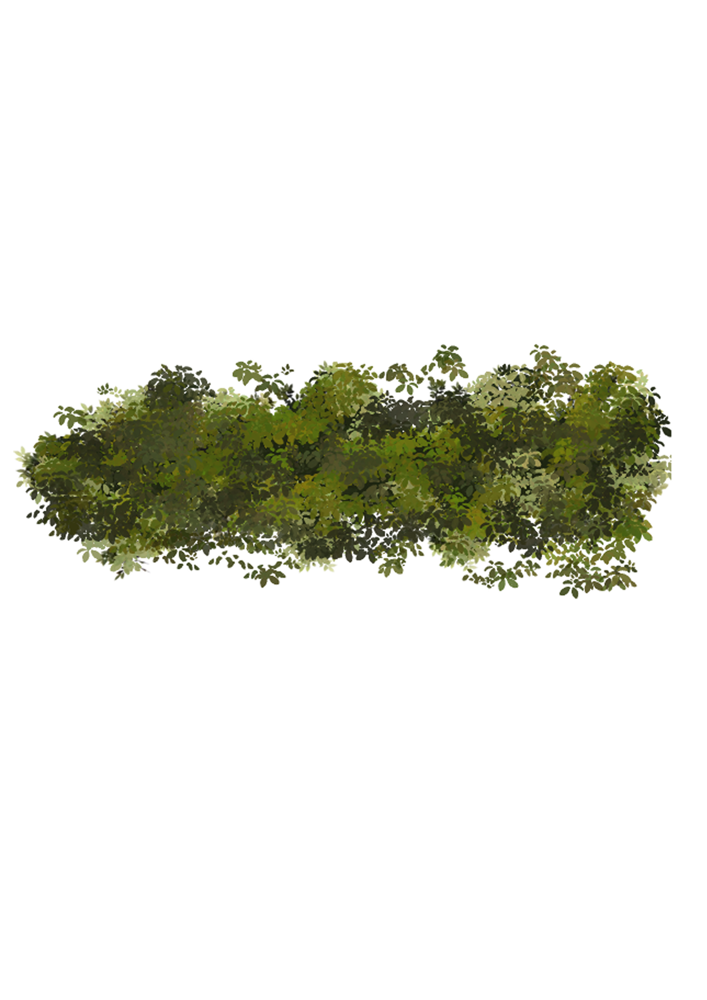
      
      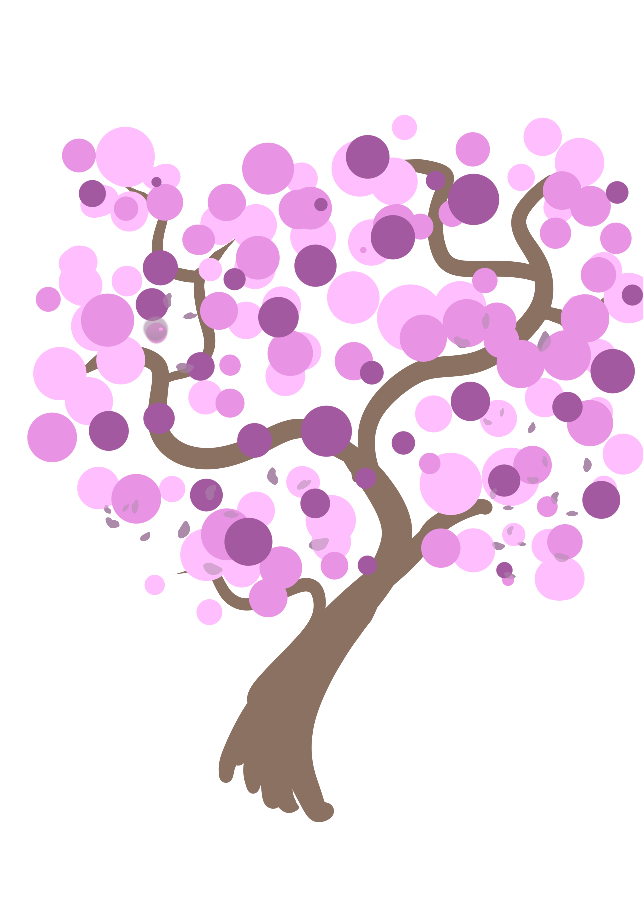
      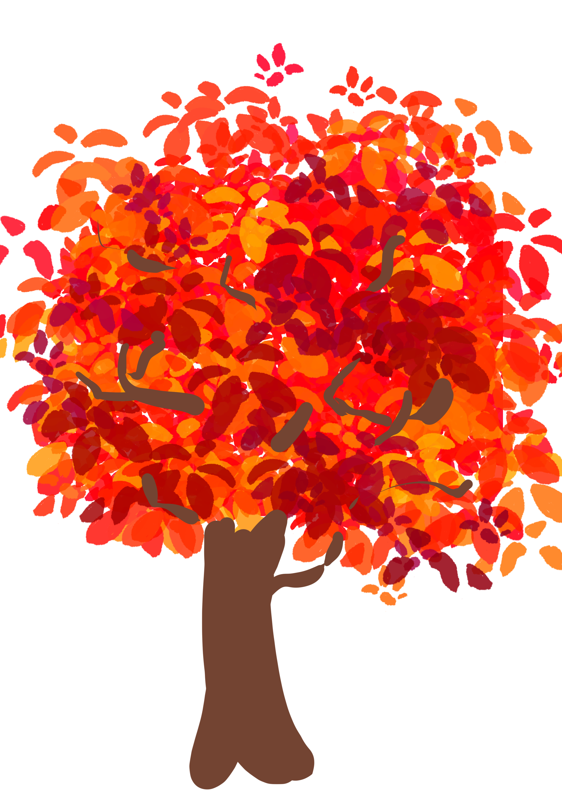
      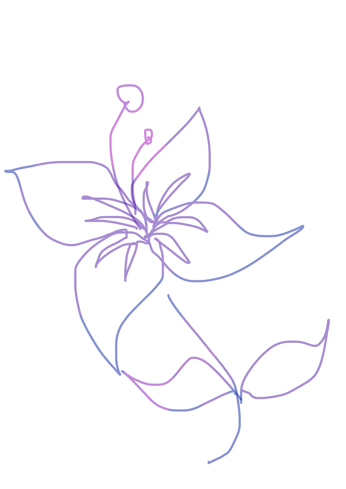
      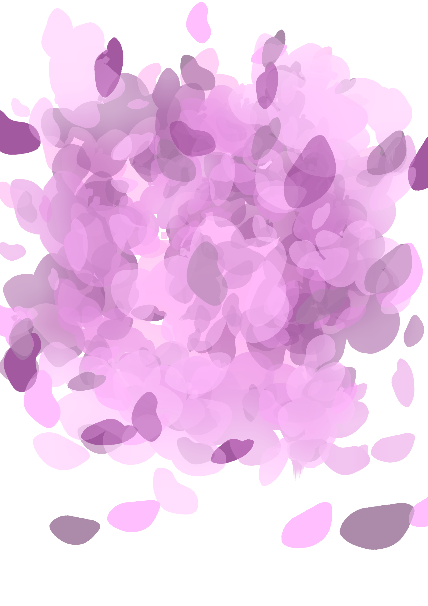
      
      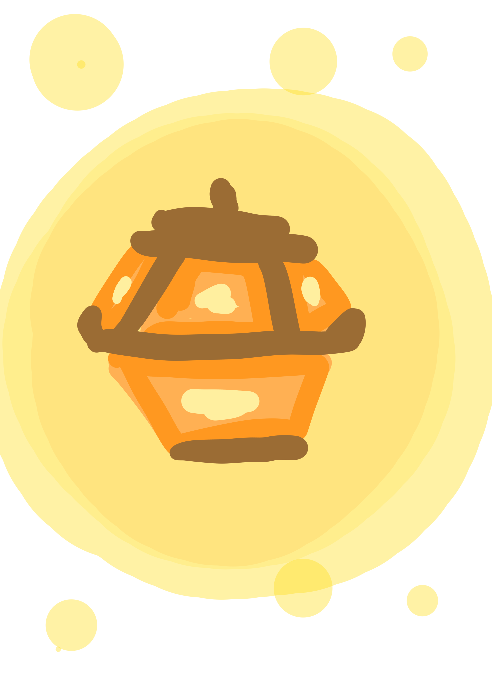
      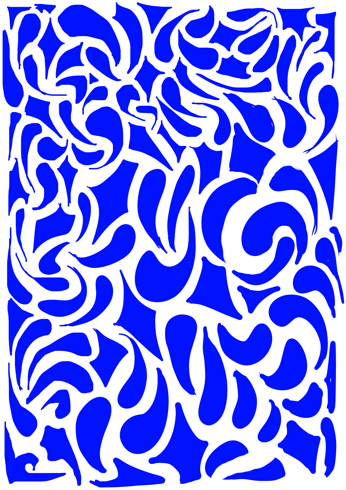
      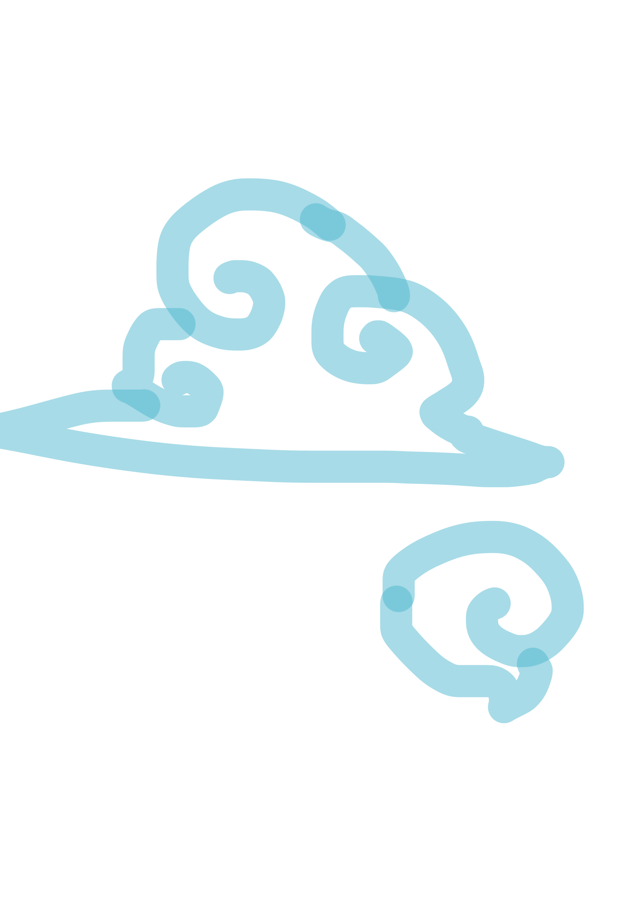
      
      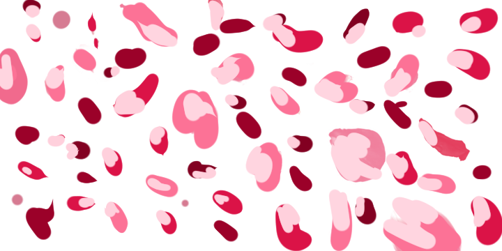
      
      
      
      
      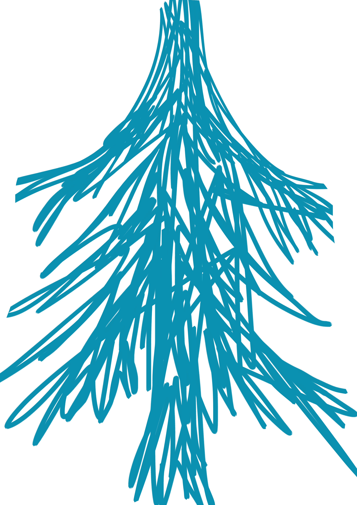
      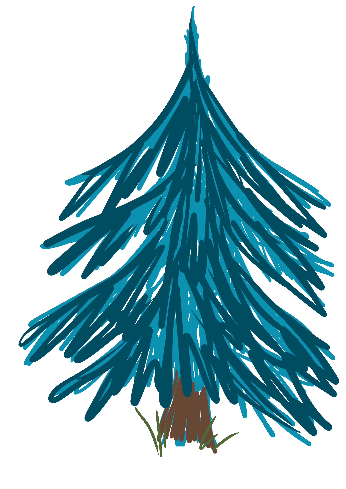
      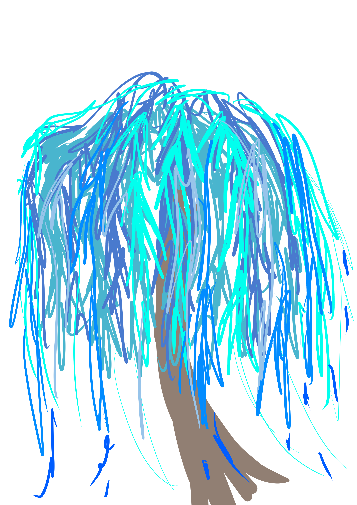
      
      

        <a-assets-item id="Perso" src="Alvares/alvarès modèle définitif.gltf"></a-assets-item>
    </a-asset>

  </head>


  <body>

    <!--Boîte de consignes lorsque le chargement est trop long.-->
    <dialog open>
      <p>Temps de chargement...
        Commande de déplacement: wasd
        Cliquer une fois pour que le son démarre!
      </p>
      <form method="dialog">
      </form>
    </dialog>
    
  
  <!--Une scène, avec sa musique de fond, un effet de brouillard bleu. Finalement, le code utilisant la physique ne sera pas pleinement utilisé.-->

  <!--a-scene fog="type: linear; color: royalblue" ou black fog="type: linear; color: #0a0030"-->
  <a-scene id="scene" fog="type: linear; color: royalblue"
  physics="debug: trueriction: 0.1; restitution: 0.5; gravity: -9.8"
  sound="src:url(Sound/magic-in-the-air-43177.mp3);
  volume:1;
  on: click;
  rolloFactor: 4;
  refDistance: 1000;
  loop: true;"
  renderer="antialias: true;
                   colorManagement: true;
                   sortObjects: true;
                   physicallyCorrectLights: true;
                   maxCanvasWidth: 1920;
                   maxCanvasHeight: 1920;">

    <!--Ciel-->
    
    <!--sky black royalblue ou blue salmon ou pink-->
    <a-sky id="ciel" img src="PNG/Fond.png" color="black"></a-sky>


    

    <!--PROBLEME : Concilier deux animations différentes! Une seule animation est gardée, celle où les étoiles bougent.
    Il faut changer les variables const x, const y et const z pour donner un effet où les étoiles se trouvent plus loins. 
    Par exemple const x = Math.random() * 7 - 6. -->
    <!--La partie du code concernant les étoiles se trouvent dans le fichiers JS.-->

    <!--étoiles de base ; color:#7221ff ; dur: 300 ou 100500 ;-->
    <a-entity id="étoiles" 
    light="type:point; decay: 1.0; intensity: 120; distance: 10000; color:#7221ff"
    animation="property: rotation; to: 0 -360 360; loop: true; dur: 100500;
    easings: easeInOutSine; 
    dir: alternate; 
    autoplay: true"
    ></a-entity>

  
  
            
            <!--Cycle jour: Soleil-->
            <!--position="0 50 -5"distance 15 et 100/// radius inital : 1.25, intensity: 2.5, position multiplier par 10 pour 5, disante initale 15; light couleur rouge et orange #FF00FF-->
        <a-entity id="Soleil" position="0 0 0" animation="property: rotation; to: 0 360 360; loop: true; dur: 100000">
            <a-sphere 
            emissive="orange" light="type:point; distance:115; color:#EF2D5E;" 
            intensity="125" castShadow="false" shadow="receive: false, type: basic"
            position="0 150 -5" radius="1.25" color="#EF2D5E"
            ></a-sphere>
            <a-torus color="orange" arc="3600" radius="5" radius-tubular="0.1"
            position="0 150 -5"
            material="src: ; roughness: 0.5; metalness: 0; opacity: 0.5"
            light="type:point; decay: 1.0; intensity: 120; distance: 200; color: #FF00FF"></a-torus>
            <a-torus color="yellow" arc="3600" radius="5" radius-tubular="0.1"
            position="0 150 -5" rotation="to: 0 360 180"
            material="src: ; roughness: 0.5; metalness: 0; opacity: 0.5"
            light="type:point; decay: 1.0; intensity: 120; distance: 200; color: orange"></a-torus>
        </a-entity>
      
            <!--Cycle nuit: Lune-->
            <!--position="0 -50 -5"distance 15/radius inital : 1.25, intensity: 2.5, position multiplier par 10 pour 5-->
        <a-entity id="Lune" position="0 0 0" animation="property: rotation; to: 0 -360 360; loop: true; dur: 100000">
                <a-sphere
                emissive="cyan" light="type:point; decay: 1.0; distance:115; color:cyan; groundColor:#ff0b49; intensity: 120" 
                intensity="2.5" castShadow="true" shadow="receive: false, type: basic"
                material="src:#moon; roughness: 0.5; metalness: 0; opacity: 0.5"
                position="0 -150 -5" radius="1.25" color="white"
                ></a-sphere>
        </a-entity>
        
            <!--Étoile filante-->
            <!--position="0 -50 -5"distance 15/radius inital : 1.25, intensity: 2.5, position multiplier par 10 pour 5-->
            <a-entity id="Shootingstar" position="0 0 0" rotation="0 90 0" animation="property: rotation; to: 0 -360 360; loop: true; dur: 10000">
              <a-image src="#nuge" height="50" width="50"
              emissive="lightblue" light="type:point; decay: 1.0; distance:115; color:lightblue; groundColor:#ff0b49; intensity: 120" 
              intensity="2.5" castShadow="true" shadow="receive: false, type: basic"
              material="src:PNG/étoilefilante.png; roughness: 0.5; metalness: 0; opacity: 0.5"
              position="120 -150 -5" radius="1.25" color="lightblue"
              ></a-image>
            </a-entity>
            <!--a-entity id="Shootingstar" position="0 0 0" animation="property: rotation; to: 0 -360 360; loop: true; dur: 10000">
              <a-image src="src:PNG/étoilefilante.png" height="5000" width="5000"
              emissive="yellow" light="type:point; decay: 1.0; distance:115; color:yellow; groundColor:#ff0b49; intensity: 120" 
              intensity="2.5" castShadow="true" shadow="receive: false, type: basic"
              material="src:#moon; roughness: 0.5; metalness: 0; opacity: 0.5"
              position="0 -150 -5" radius="1.25" color="white"
              ></a-image>
            </a-entity-->

<!--Limite-->
<!--Une sphère pour ne pas avoir de limite de déplacement : idée abandonnée !-->
<!--Finalement, le code de limitation ne sera pas mis en place dans le code Javascript.-->
<!--Ceci est un point de repaire sur la limite de la map-->
<a-sphere color="red" radius="6" position="0 0 500" emissive="red" light="type:point; decay: 1.0; distance:115; color:red; intensity: 120"></a-sphere>
          

        <!--L'autre lune-->
        <!--Prpblème: La musique overlap avec celle de la scène. -->
        <!--Il faut être sûr d'avoir cliqué dessus et être en-dessous de la lune pour entendre.-->
        <a-entity id="The lost moon">
          <a-sphere
            position="0 150 0"
            animation="property: rotation; to: 0 -360 360; loop: true; dur: 100000"
            cursor-listener geometry="primitive: sphere"
            
            sound="src:url(Sound/aquarium-by-saint-saens-156733.mp3); 
            volume:4;
            on: click;
            off: click;
            rolloFactor: 4;
            refDistance: 4;
            loop: true;"
            
            emissive="white" light="type:point; distance:15; color:cyan;" 
            intensity="2.5" castShadow="true" shadow="receive: false, type: basic"
            material="src:#moon; roughness: 0.5; metalness: 0; opacity: 0.5"
            position="0 -5 -5" radius="10" color="cyan"    
          ></a-sphere>
          <!--a-torus color="white" arc="3600" radius="5" radius-tubular="0.1"
          position="0 0 0"
          animation="property: rotation; to: 0 -360 360; loop: true; dur: 100000"
          material="src: ; roughness: 0.5; metalness: 0; opacity: 0.5"></a-torus-->
      </a-entity>


<!--Ce qui est censé être des feu follets entre-guillemets. radius 0.05-->
      <a-entity position="0 100 40" animation="property: rotation; to: random(0,360) random(0,360) 360; loop: true; dur: 10000; from: 0 90 0; dir: alternate">
        <a-sphere 
        emissive="lightgreen" light="type:point; distance:15; color:lightgreen;" 
        intensity="2.5" castShadow="true" shadow="receive: false, type: basic"
        position="0 -5 -5" radius="0.5" color="lightgreen"
        ></a-sphere>
          <a-sphere 
          emissive="pink" light="type:point; distance:15; color:pink;" 
          intensity="2.5" castShadow="true" shadow="receive: false, type: basic"
          position="0 5 -5" radius="0.5" color="lightgreen"
          ></a-sphere>
            <a-sphere 
            emissive="yellow" light="type:point; distance:15; color:yellow;" 
            intensity="2.5" castShadow="true" shadow="receive: false, type: basic"
            position="0 5 5" radius="0.5" color="lightgreen"
            ></a-sphere>
              <a-sphere 
              emissive="red" light="type:point; distance:15; color:red;" 
              intensity="2.5" castShadow="true" shadow="receive: false, type: basic"
              position="0 -5 5" radius="0.5" color="lightgreen"
              ></a-sphere>

                <a-sphere 
                emissive="cyan" light="type:point; distance:15; color:cyan;" 
                intensity="2.5" castShadow="true" shadow="receive: false, type: basic"
                position="5 -5 5" radius="0.5" color="lightgreen"
                ></a-sphere>
                  <a-sphere 
                  emissive="aquamarine" light="type:point; distance:15; color:aquamarine;" 
                  intensity="2.5" castShadow="true" shadow="receive: false, type: basic"
                  position="5 5 -5" radius="0.5" color="lightgreen"
                  ></a-sphere>
                    <a-sphere 
                    emissive="salmon" light="type:point; distance:15; color:salmon;" 
                    intensity="2.5" castShadow="true" shadow="receive: false, type: basic"
                    position="-5 5 5" radius="0.5" color="lightgreen"
                    ></a-sphere>

                  <a-sphere 
                  emissive="orange" light="type:point; distance:15; color:orange;" 
                  intensity="2.5" castShadow="true" shadow="receive: false, type: basic"
                  position="-5 -5 5" radius="0.5" color="lightgreen"
                  ></a-sphere>
                    <a-sphere 
                    emissive="purple" light="type:point; distance:15; color:purple;" 
                    intensity="2.5" castShadow="true" shadow="receive: false, type: basic"
                    position="5 -5 -5" radius="0.5" color="lightgreen"
                    ></a-sphere>
                      <a-sphere 
                      emissive="lightyellow" light="type:point; distance:15; color:lightyellow;" 
                      intensity="2.5" castShadow="true" shadow="receive: false, type: basic"
                      position="-5 5 -5" radius="0.5" color="lightgreen"
                      ></a-sphere>

                        <a-sphere 
                        emissive="blue" light="type:point; distance:15; color:blue;" 
                        intensity="2.5" castShadow="true" shadow="receive: false, type: basic"
                        position="5 5 5" radius="0.5" color="lightgreen"
                        ></a-sphere>
                          <a-sphere 
                          emissive="lightblue" light="type:point; distance:15; color:lightblue;" 
                          intensity="2.5" castShadow="true" shadow="receive: false, type: basic"
                          position="-5 -5 -5" radius="0.5" color="lightgreen"
                          ></a-sphere>
      </a-entity>


<!--Lanternes bougeant légéremment-->
<!--radius inital : 1.25, intensity: 2.5, position multiplier par 10 pour 5-->
<a-entity id="Lanternes" color="magenta" animation="property: position; from: 0 90 0; to: 0 70 0; loop: true; dur: 1700; dir: alternate"
emissive="orange" light="type:directional; distance:10; color:orange; intensity: 0" 
castShadow="true" shadow="receive: false, type: basic"
material="src:; roughness: 0.5; metalness: 1; opacity: 0.5"
radius="1" color="orange" position="0 20 0"
>
<a-image src="#lanterne" color="orange" width="10" height="10"></a-image>
<a-image src="#lanterne" width="10" height="10" position="-20 90 0"></a-image>
<a-image src="#lanterne" color="orange" width="10" height="10" position="-70 65 -10" animation="property: position; from: 0 120 0; to: 0 70 0; loop: true; dur: 1700; dir: alternate"></a-image>
<a-image src="#lanterne" width="10" height="10" position="-40 78.34 -30"></a-image>
<a-image src="#lanterne" color="orange" width="10" height="10" position="21.34 38.2 -40" animation="property: position; from: 21.34 38.2 -40; to: 27.34 8.2 -40; loop: true; dur: 1700; dir: alternate"></a-image>
<a-image src="#lanterne" width="10" height="10" position="54.32 23.0 -70"></a-image>
<a-image src="#lanterne" color="orange" width="10" height="10" position="84.2 12.0 -90" animation="property: position; from: 84.2 12.0 -90; to: 87.2 72.0 -90; loop: true; dur: 1700; dir: alternate"></a-image>
<a-image src="#lanterne" width="10" height="10" position="92.0 32.2 -34.40"></a-image>
<a-image src="#lanterne" color="orange" width="10" height="10" position="42.2 96 20"animation="property: position; from: 42.2 96 20; to: 47.2 26 20; loop: true; dur: 1700; dir: alternate"></a-image>
<a-image src="#lanterne" width="10" height="10" position="-78.2 10 70"></a-image>
<a-image src="#lanterne" color="orange" width="10" height="10" position="23.43 90 50"></a-image>
<a-image src="#lanterne" width="10" height="10" position="67.3 90 43"></a-image>
<a-image src="#lanterne" color="orange" width="10" height="10" position="78.12 10 90"></a-image>
</a-entity>


         <!--Pluie de pétales-->
            <a-entity id="Pluie de pétales" animation="property: position; from: 0 60 0; to: 0 -20 20; loop: true; dur: 8000">
             
              <a-image color="pink" src="#pétales" height="10" width="10"
              emissive="lightgreen" light="type:point; distance:15; color:pink;" 
              intensity="2.5" castShadow="true" shadow="receive: false, type: basic"
              position="0 -5 -5" 
              ></a-image>
              <a-image color="blue" src="#pétales" height="20" width="20"
              emissive="lightgreen" light="type:point; distance:15; color:blue;" 
              intensity="2.5" castShadow="true" shadow="receive: false, type: basic"
              position="0 5 -5" 
              ></a-image>
              <a-image color="purple" src="#pétales" height="5" width="5"
              emissive="lightgreen" light="type:point; distance:15; color:purple;" 
              intensity="2.5" castShadow="true" shadow="receive: false, type: basic"
              position="0 5 5" 
              ></a-image>
              <a-image color="cyan" src="#pétales" height="20" width="20"
              emissive="lightgreen" light="type:point; distance:15; color:cyan;" 
              intensity="2.5" castShadow="true" shadow="receive: false, type: basic"
              position="0 -5 5" 
              ></a-image>


              <a-image color="pink" src="#pétales" height="10" width="10"
              emissive="lightgreen" light="type:point; distance:15; color:pink;" 
              intensity="2.5" castShadow="true" shadow="receive: false, type: basic"
              position="-15 -15 5" 
              ></a-image>
              <a-image color="blue" src="#pétales" height="20" width="20"
              emissive="lightgreen" light="type:point; distance:15; color:blue;" 
              intensity="2.5" castShadow="true" shadow="receive: false, type: basic"
              position="-15 15 5" 
              ></a-image>
              <a-image color="purple" src="#pétales" height="25" width="25"
              emissive="lightgreen" light="type:point; distance:15; color:purple;" 
              intensity="2.5" castShadow="true" shadow="receive: false, type: basic"
              position="-15 15 5" 
              ></a-image>
              <a-image color="cyan" src="#pétales" height="20" width="20"
              emissive="lightgreen" light="type:point; distance:15; color:cyan;" 
              intensity="2.5" castShadow="true" shadow="receive: false, type: basic"
              position="-15 -15 5" 
              ></a-image>
            </a-entity>


<!--Sol principal-->
<a-entity id="sol" position="0 0 0">
<!--Des essais avec des sols en miroir ont été fait en utilisant les balises du "mirror component" importé en début de code.-->
<!--a-mirror position="0 0 0" scale="100 100 100" rotation="0 180 0"></a-mirror-->
<!--a-mirror position="0 0 0" scale="100 100 100" rotation="0 0 0"></a-mirror-->
<!--100 sur 100 par défaut pour vérifier et opacity 0.5 pour voir ce qui se passe en-dessous-->
<a-plane position="0 0 0" height="1000" width="1000" rotation="-90 0 0"
material="src: ; roughness: 0.5; metalness: 0; opacity: 1" color="royalblue"
></a-plane>
</a-entity>

<!--Miroir placé juste derrière le joueur à son arrivée. Bug un peu avec les éléments 2D, mais ça n'empêche pas de le voir.-->
<a-entity id="miroir">
  <a-mirror position="10 20 200" scale="100 100 100" rotation="0 180 0"></a-mirror-->
  <a-mirror position="10 20 200" scale="100 100 100" rotation="0 0 0"></a-mirror-->
  <a-mirror id="bigmirror" position="0 200 0" scale="1000 1000 1000" rotation="-20 180 0"></a-mirror-->
</a-entity>

<!--Alvarès+Code d'intéraction pour les dialogue (qui sera finalement abandonné) 0 25 0 10 20 180-->
<!--Le but initial du code d'intéraction était qu'à chaque click, le texte flottant à côté du personnage se mette à jour.-->
<!--De plus, des intéractions avec des objets comme en activant le son de la lune perdue devait mettre à jour le texte avec une valeur au compteur différente.-->
<a-entity gltf-model="#Perso" position="0 25 0" height="10" rotation="0 180 0"
    castShadow="true" shadow="receive: true, type: basic"
    
    animation="property : scale; to : 1.015 1 1.015; loop : true; dur : 1000; dir : alternate;"
    
    cursor-listener id="Perso"
    
    sound="src:url();
    volume:1;
    on: click;
    off: click;
    rolloFactor: 4;
    refDistance: 4;
    loop: false;">
></a-entity>

<!--Texte pour trouver le miroir derrière soi.-->
<a-entity position="0 40 200" visible="true" rotation="0 0 0"
text="value: Trouve le miroir;
align:center;
alphaTest: 0.5;
anchor: align;
baseline:center;
color:white;
font: dejavu;
fontImage:;
height: 106;
letterSpacing: 36;
lineHeight: 0;
negate: true;
opacity: 1;
shader: sdf;
side: front;
tabSize: 4;
transparent: true;
whiteSpace:normal;
width: 13.0;
wrapCount: 20;"
emissive="lightblue" light="type:point; decay: 1.0; distance:115; color:lightblue; intensity: 120"
></a-entity>

<!--Indice sur la lune-->
<a-entity id="Indice sur l'easter egg de la lune" position="-10 20 -20" visible="true"
text="value: Certains parlent de Lorialets, d'autres parlent de Sélénites, mais y a-t-il quelque chose sur cette lune?;
align:center;
alphaTest: 0.5;
anchor: align;
baseline:center;
color:white;
font:roboto;
fontImage:;
height: 52;
letterSpacing: 36;
lineHeight: 0;
negate: true;
opacity: 1;
shader: sdf;
side: front;
tabSize: 4;
transparent: true;
whiteSpace:normal;
width: 6.0;
wrapCount: 20;
"></a-entity>


<a-entity id="Dialogue" position="-10 30 -20" visible="true"
text="value: ...;
align:center;
alphaTest: 0.5;
anchor: align;
baseline:center;
color:white;
font:roboto;
fontImage:;
height: 52;
letterSpacing: 36;
lineHeight: 0;
negate: true;
opacity: 1;
shader: sdf;
side: front;
tabSize: 4;
transparent: true;
whiteSpace:normal;
width: 6.0;
wrapCount: 20;
"></a-entity>


<!--Arbres et autres végétations : couleur bleu, violet, rose orange ATTENTION: somme lumière donne luminosité blanche-->
<a-image id="Le Grand arbre bleu brillant" src="#arbre" position="-15 50 10" height="100" width="100" alt="fond"
emissive="cyan" light="type:point; distance:15; color:cyan; groundColor:#ff0b49; intensity: 1200" 
intensity="1" castShadow="true" shadow="receive: false, type: basic"
material="roughness: 0.5; metalness: 0; opacity: 0.5"
animation="property : scale; to : 1.025 1 1.025; loop : true; dur : 1000; dir : alternate;"
></a-image>
<a-image id="Le Grand arbre bleu brillant2" src="#arbre" position="-15 50 10" rotation="0 90 0" height="100" width="100" alt="fond"
emissive="cyan" light="type:point; distance:15; color:cyan; groundColor:#ff0b49; intensity: 1200" 
intensity="1" castShadow="true" shadow="receive: false, type: basic"
material="roughness: 0.5; metalness: 0; opacity: 0.5"
animation="property : scale; to : 1.025 1 1.025; loop : true; dur : 1000; dir : alternate;"
></a-image>

<a-image id="Le Cerisier" color="purple" src="#pinkcherry" position="35 50 20" height="100" width="100" alt="fond"
emissive="pink" light="type:point; distance:15; color:pink; groundColor:#ff0b49; intensity: 1200" 
intensity="1" castShadow="true" shadow="receive: false, type: basic"
material="roughness: 0.5; metalness: 0; opacity: 0.5"
animation="property : scale; to : 1.025 1 1.025; loop : true; dur : 1000; dir : alternate;"
></a-image>
<a-image id="Le Cerisier 2" color="purple" src="#pinkcherry" position="35 50 20" rotation="0 90 0" height="100" width="100" alt="fond"
emissive="pink" light="type:point; distance:15; color:pink; groundColor:#ff0b49; intensity: 1200" 
intensity="1" castShadow="true" shadow="receive: false, type: basic"
material="roughness: 0.5; metalness: 0; opacity: 0.5"
animation="property : scale; to : 1.025 1 1.025; loop : true; dur : 1000; dir : alternate;"
></a-image>

<a-image id="Lierre sur cerisier" color="royalblue" src="#buissonbis" position="35 50 20" height="100" width="100" alt="fond"
emissive="blue" light="type:point; distance:15; color:blue; groundColor:#ff0b49; intensity: 1200" 
intensity="1" castShadow="true" shadow="receive: false, type: basic"
material="roughness: 0.5; metalness: 0; opacity: 0.5"
animation="property : scale; to : 1.025 1 1.025; loop : true; dur : 1000; dir : alternate;"></a-image>
<a-image id="Lierre sur cerisier 2 " color="royalblue" src="#buissonbis" position="35 50 20" rotation="0 90 0" height="100" width="100" alt="fond"
emissive="blue" light="type:point; distance:15; color:blue; groundColor:#ff0b49; intensity: 1200" 
intensity="1" castShadow="true" shadow="receive: false, type: basic"
material="roughness: 0.5; metalness: 0; opacity: 0.5"
animation="property : scale; to : 1.025 1 1.025; loop : true; dur : 1000; dir : alternate;"></a-image>

<a-image id="Buisson" color="royalblue" src="#buissonbis" position="-15 0 10" height="10" width="10" alt="fond"
emissive="blue" light="type:point; distance:15; color:blue; groundColor:#ff0b49; intensity: 1200" 
intensity="1" castShadow="true" shadow="receive: false, type: basic"
material="roughness: 0.5; metalness: 0; opacity: 0.5"
animation="property : scale; to : 1.025 1 1.025; loop : true; dur : 1000; dir : alternate;"></a-image>
<a-image id="Buisson 2 " color="royalblue" src="#buissonbis" position="-15 0 10" rotation="0 90 0" height="10" width="10" alt="fond"
emissive="blue" light="type:point; distance:15; color:blue; groundColor:#ff0b49; intensity: 1200" 
intensity="1" castShadow="true" shadow="receive: false, type: basic"
material="roughness: 0.5; metalness: 0; opacity: 0.5"
animation="property : scale; to : 1.025 1 1.025; loop : true; dur : 1000; dir : alternate;"></a-image>

<a-image id="Le Cerisier 3" color="pink" src="#pinkcherry" position="30 50 -37" height="100" width="100" alt="fond"
emissive="pink" light="type:point; distance:15; color:pink; groundColor:#ff0b49; intensity: 1200" 
intensity="1" castShadow="true" shadow="receive: false, type: basic"
material="roughness: 0.5; metalness: 0; opacity: 0.5"
animation="property : scale; to : 1.025 1 1.025; loop : true; dur : 1000; dir : alternate;"
></a-image>
<a-image id="Le Cerisier 4" color="pink" src="#pinkcherry" position="30 50 -37" rotation="0 90 0" height="100" width="100" alt="fond"
emissive="pink" light="type:point; distance:15; color:pink; groundColor:#ff0b49; intensity: 1200" 
intensity="1" castShadow="true" shadow="receive: false, type: basic"
material="roughness: 0.5; metalness: 0; opacity: 0.5"
animation="property : scale; to : 1.025 1 1.025; loop : true; dur : 1000; dir : alternate;"
></a-image>

<a-image id="Le Grand arbre bleu brillant 3" color="salmon" src="#arbre" position="-15 40 46" height="80" width="80" alt="fond"
emissive="orange" light="type:point; distance:15; color:orange; groundColor:#ff0b49; intensity: 1200" 
intensity="1" castShadow="true" shadow="receive: false, type: basic"
material="roughness: 0.5; metalness: 0; opacity: 0.5"
animation="property : scale; to : 1.025 1 1.025; loop : true; dur : 1000; dir : alternate;"
></a-image>
<a-image id="Le Grand arbre bleu brillant 4" color="salmon" src="#arbre" position="-15 40 46" rotation="0 90 0" height="80" width="80" alt="fond"
emissive="orange" light="type:point; distance:15; color:orange; groundColor:#ff0b49; intensity: 1200" 
intensity="1" castShadow="true" shadow="receive: false, type: basic"
material="roughness: 0.5; metalness: 0; opacity: 0.5"
animation="property : scale; to : 1.025 1 1.025; loop : true; dur : 1000; dir : alternate;"
></a-image>

<a-image id="Lila" color="pink" src="#lila" position="45 20 46" height="60" width="60" alt="fond"
emissive="pink" light="type:point; distance:15; color:orange; groundColor:#ff0b49; intensity: 1200" 
intensity="1" castShadow="true" shadow="receive: false, type: basic"
material="roughness: 0.5; metalness: 0; opacity: 0.5"
animation="property : scale; to : 1.025 1 1.025; loop : true; dur : 1000; dir : alternate;"
></a-image>
<a-image id="Lila 2" color="pink" src="#lila" position="45 20 46" rotation="0 90 0" height="60" width="60" alt="fond"
emissive="pink" light="type:point; distance:15; color:orange; groundColor:#ff0b49; intensity: 1200" 
intensity="1" castShadow="true" shadow="receive: false, type: basic"
material="roughness: 0.5; metalness: 0; opacity: 0.5"
animation="property : scale; to : 1.025 1 1.025; loop : true; dur : 1000; dir : alternate;"
></a-image>

<a-image id="Sapin" src="#sapinvert" color="cyan" position="-55.699 38.225 77.460" height="80" width="80" alt="fond"
emissive="lightgreen" light="type:point; distance:15; color:green; groundColor:#ff0b49; intensity: 1200" 
intensity="1" castShadow="true" shadow="receive: false, type: basic"
material="roughness: 0.5; metalness: 0; opacity: 0.5"
animation="property : scale; to : 1.025 1 1.025; loop : true; dur : 1000; dir : alternate;"></a-image>
<a-image id="Sapin" src="#sapinvert" color="cyan" position="-55.699 38.225 77.460" rotation="0 90 0" height="80" width="80" alt="fond"
emissive="lightgreen" light="type:point; distance:15; color:green; groundColor:#ff0b49; intensity: 1200" 
intensity="1" castShadow="true" shadow="receive: false, type: basic"
material="roughness: 0.5; metalness: 0; opacity: 0.5"
animation="property : scale; to : 1.025 1 1.025; loop : true; dur : 1000; dir : alternate;"></a-image>

<a-image id="Sapin 2" src="#sapinvert" color="cyan" position="93.23 30 52" height="80" width="80" alt="fond"
emissive="lightgreen" light="type:point; distance:15; color:green; groundColor:#ff0b49; intensity: 1200" 
intensity="1" castShadow="true" shadow="receive: false, type: basic"
material="roughness: 0.5; metalness: 0; opacity: 0.5"
animation="property : scale; to : 1.025 1 1.025; loop : true; dur : 1000; dir : alternate;"></a-image>
<a-image id="Sapin 2" src="#sapinvert" color="cyan" position="93.23 30 52" rotation="0 90 0" height="80" width="80" alt="fond"
emissive="lightgreen" light="type:point; distance:15; color:green; groundColor:#ff0b49; intensity: 1200" 
intensity="1" castShadow="true" shadow="receive: false, type: basic"
material="roughness: 0.5; metalness: 0; opacity: 0.5"
animation="property : scale; to : 1.025 1 1.025; loop : true; dur : 1000; dir : alternate;"></a-image>

<a-image id="Sapin 3" src="#sapinvert" color="cyan" position="213 30 23" height="80" width="80" alt="fond"
emissive="lightgreen" light="type:point; distance:15; color:green; groundColor:#ff0b49; intensity: 1200" 
intensity="1" castShadow="true" shadow="receive: false, type: basic"
material="roughness: 0.5; metalness: 0; opacity: 0.5"
animation="property : scale; to : 1.025 1 1.025; loop : true; dur : 1000; dir : alternate;"></a-image>
<a-image id="Sapin 3" src="#sapinvert" color="cyan" position="213 30 23" rotation="0 90 0" height="80" width="80" alt="fond"
emissive="lightgreen" light="type:point; distance:15; color:green; groundColor:#ff0b49; intensity: 1200" 
intensity="1" castShadow="true" shadow="receive: false, type: basic"
material="roughness: 0.5; metalness: 0; opacity: 0.5"
animation="property : scale; to : 1.025 1 1.025; loop : true; dur : 1000; dir : alternate;"></a-image>

<a-image id="Sapin 4" src="#sapinvert" color="cyan" position="31.990 37.039 155.707" height="80" width="80" alt="fond"
emissive="lightgreen" light="type:point; distance:15; color:green; groundColor:#ff0b49; intensity: 1200" 
intensity="1" castShadow="true" shadow="receive: false, type: basic"
material="roughness: 0.5; metalness: 0; opacity: 0.5"
animation="property : scale; to : 1.025 1 1.025; loop : true; dur : 1000; dir : alternate;"></a-image>
<a-image id="Sapin 4" src="#sapinvert" color="cyan" position="31.990 37.039 155.707" rotation="0 90 0" height="80" width="80" alt="fond"
emissive="lightgreen" light="type:point; distance:15; color:green; groundColor:#ff0b49; intensity: 1200" 
intensity="1" castShadow="true" shadow="receive: false, type: basic"
material="roughness: 0.5; metalness: 0; opacity: 0.5"
animation="property : scale; to : 1.025 1 1.025; loop : true; dur : 1000; dir : alternate;"></a-image>

<a-image id="Sapin 5" src="#sapinvert" color="cyan" position="45 30 78" height="80" width="80" alt="fond"
emissive="lightgreen" light="type:point; distance:15; color:green; groundColor:#ff0b49; intensity: 1200" 
intensity="1" castShadow="true" shadow="receive: false, type: basic"
material="roughness: 0.5; metalness: 0; opacity: 0.5"
animation="property : scale; to : 1.025 1 1.025; loop : true; dur : 1000; dir : alternate;"></a-image>
<a-image id="Sapin 5" src="#sapinvert" color="cyan" position="45 30 78" height="80" rotation="0 90 0" width="80" alt="fond"
emissive="lightgreen" light="type:point; distance:15; color:green; groundColor:#ff0b49; intensity: 1200" 
intensity="1" castShadow="true" shadow="receive: false, type: basic"
material="roughness: 0.5; metalness: 0; opacity: 0.5"
animation="property : scale; to : 1.025 1 1.025; loop : true; dur : 1000; dir : alternate;"></a-image>

<a-image id="Rhodendindron 1" src="#rhodendindron" color="pink" position="123 30 91.23" height="80" width="80" alt="fond"
emissive="pink" light="type:point; distance:15; color:pink; groundColor:#ff0b49; intensity: 1200" 
intensity="1" castShadow="true" shadow="receive: false, type: basic"
material="roughness: 0.5; metalness: 0; opacity: 0.5"
animation="property : scale; to : 1.025 1 1.025; loop : true; dur : 1000; dir : alternate;"></a-image>
<a-image id="Rhodendindron 1" src="#rhodendindron" color="pink" rotation="0 90 0" position="123 30 91.23" height="80" width="80" alt="fond"
emissive="pink" light="type:point; distance:15; color:pink; groundColor:#ff0b49; intensity: 1200" 
intensity="1" castShadow="true" shadow="receive: false, type: basic"
material="roughness: 0.5; metalness: 0; opacity: 0.5"
animation="property : scale; to : 1.025 1 1.025; loop : true; dur : 1000; dir : alternate;"></a-image>

<a-image id="Rhodendindron 2" src="#rhodendindron" color="pink" position="-122 30 -21.23" height="80" width="80" alt="fond"
emissive="pink" light="type:point; distance:15; color:pink; groundColor:#ff0b49; intensity: 1200" 
intensity="1" castShadow="true" shadow="receive: false, type: basic"
material="roughness: 0.5; metalness: 0; opacity: 0.5"
animation="property : scale; to : 1.025 1 1.025; loop : true; dur : 1000; dir : alternate;"></a-image>
<a-image id="Rhodendindron 2" src="#rhodendindron" color="pink" rotation="0 90 0" position="-122 30 -21.23" height="80" width="80" alt="fond"
emissive="pink" light="type:point; distance:15; color:pink; groundColor:#ff0b49; intensity: 1200" 
intensity="1" castShadow="true" shadow="receive: false, type: basic"
material="roughness: 0.5; metalness: 0; opacity: 0.5"
animation="property : scale; to : 1.025 1 1.025; loop : true; dur : 1000; dir : alternate;"></a-image>

<a-image id="Rhodendindron 3" src="#rhodendindron" color="pink" position="-32.123 30 -21.21" height="80" width="80" alt="fond"
emissive="pink" light="type:point; distance:15; color:pink; groundColor:#ff0b49; intensity: 1200" 
intensity="1" castShadow="true" shadow="receive: false, type: basic"
material="roughness: 0.5; metalness: 0; opacity: 0.5"
animation="property : scale; to : 1.025 1 1.025; loop : true; dur : 1000; dir : alternate;"></a-image>
<a-image id="Rhodendindron 3" src="#rhodendindron" color="pink" rotation="0 90 0" position="-32.123 30 -21.21" height="80" width="80" alt="fond"
emissive="pink" light="type:point; distance:15; color:pink; groundColor:#ff0b49; intensity: 1200" 
intensity="1" castShadow="true" shadow="receive: false, type: basic"
material="roughness: 0.5; metalness: 0; opacity: 0.5"
animation="property : scale; to : 1.025 1 1.025; loop : true; dur : 1000; dir : alternate;"></a-image>

<!--Le reste de la vertdure/arbre est mise au hasard via le code JS.-->


<!--Caméra+Personnage jouable + Son de pas (le son bug un peu si c'est un son trop constant!)-->
  <a-entity id="Caméra" position="1 10 10">
    <a-camera id="camera" position="0 20 200" look-controls="enabled: true"
    sound="src:url(Sound/AMBBird_Campagne (ID 0097)_LS.mp3); 
            volume:1;
            rolloFactor: 4;
            refDistance: 4;
            loop: false;
            on: click"
            >
      <a-cursor color="white" width="2" height="2" side="double"></a-cursor>
      <!--On peut voir le fantôme dans le miroir-->
      <a-image id="fantôme" src="PNG/fantome.png" height="20" width="20"></a-image>
      <!--a-entity gltf-model="#Perso" height="1" rotation="0 180 0"></a-entity-->
    </a-camera>

  </a-entity>  
  
  </a-scene>

<script src="Nyx.js"></script>


  </body>


  <!--Sections Crédits & Ressources-->
  <!--Ceci est un projet étudiant à but non lucratif!-->

  <!--Fichiers images et modèle 3D-->
  <!--Image de la lune par la NASA's Scientific Visualization Studio: https://svs.gsfc.nasa.gov/4720/-->
  <!--Tous les fichiers png non mentionnés ainsi que le modèle 3D ont été créés expressément pour le projet.-->

  <!--Sons & Musiques-->
  <!--Campagne son, sur le site de la Sonothèque: https://lasonotheque.org/campagne-s0097.html-->
  <!--Magic in the air, par Geoff Harvey: https://pixabay.com/fr/music/titre-principal-magic-in-the-air-43177/-->
  <!--Aquarium, de Saint Saëns, Abydos_Music : https://pixabay.com/fr/music/fantaisie-et-enfants-reveurs-aquarium-by-saint-saens-156733/-->

  <!--Codes-->
  <!--Miroir component-->
  <!--Fern-aframe-components, par MRXZ: https://github.com/mrxz/fern-aframe-components/tree/main/mirror-->
  <!--Particule image component-->
  <!--A-Frame-Component-Image Particles, par Akbartus: https://github.com/akbartus/A-Frame-Component-Image-Particles-->
  <!--Physique-->
  <!--Aframe-physics-system, par n5ro: https://github.com/c-frame/aframe-physics-system-->
  <!--Three.js-->